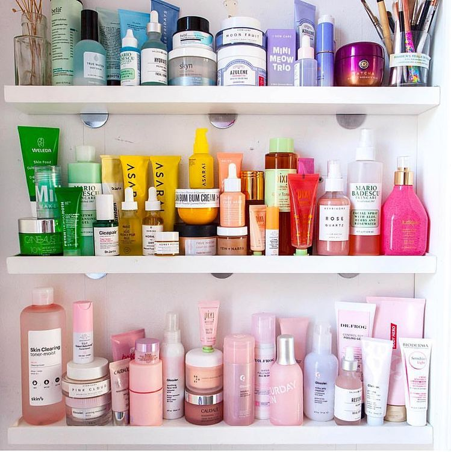

{% extends "base_generic.html" %}
{% block titulo %} Inicio {% endblock %}
{% block content %}
{% load static %}
<br><br>
<link rel="stylesheet" href="https://maxcdn.bootstrapcdn.com/bootstrap/4.5.2/css/bootstrap.min.css">
<style>
    .carousel-container {
        display: flex;
        justify-content: center;
        align-items: center;
        height: 1000vh;
        padding-left: 100px;
    }
  </style>
<div id="myCarousel" class="carousel slide" data-ride="carousel">
  <!-- Indicadores -->
  <ul class="carousel-indicators">
      <li data-target="#myCarousel" data-slide-to="0" class="active"></li>
      <li data-target="#myCarousel" data-slide-to="1"></li>
      <li data-target="#myCarousel" data-slide-to="2"></li>
  </ul>
  
  <!-- Imágenes -->
  <div class="carousel-inner">
      <div class="carousel-item active">
          
      </div>
      <div class="carousel-item">
          
      </div>
      <div class="carousel-item">
          
      </div>
  </div>
  
  <!-- Controles -->
  <a class="carousel-control-prev" href="#myCarousel" data-slide="prev">
      <span class="carousel-control-prev-icon"></span>
  </a>
  <a class="carousel-control-next" href="#myCarousel" data-slide="next">
      <span class="carousel-control-next-icon"></span>
  </a>
</div>

<script src="https://code.jquery.com/jquery-3.5.1.slim.min.js"></script>
<script src="https://cdn.jsdelivr.net/npm/@popperjs/core@2.6.0/dist/umd/popper.min.js"></script>
<script src="https://maxcdn.bootstrapcdn.com/bootstrap/4.5.2/js/bootstrap.min.js"></script>
<script>
  $(document).ready(function() {
      // Iniciar el carrusel automáticamente
      $('.carousel').carousel({
          interval: 2000 // Cambiar imagen cada 2 segundos
      });
  });
</script>
{% endblock %}
